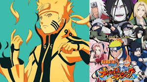
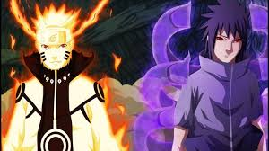
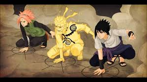

故事大綱
主要講述名為小傑·富力士的12歲少年尋找父親——金·富力士的故事。「獵人」（HUNTER）一詞是故事所設定的世界中的社會超級菁英。

第一部
12年前，一隻被人們稱為九尾的狐仙襲擊了木葉忍者村，當時的火影最後用禁術將九尾封入一位叫做鳴人的嬰兒體內，鳴人因此受盡了村人的冷落
，只是拚命用各種惡作劇試圖吸引大家的注意力。為了讓更多的人認可自己，鳴人的目標是成為火影。整個故事就圍繞鳴人的奮鬥、成長，鳴人的
同伴們的故事，以及這個忍者世界的各種爭鬥和陰謀展開。。

第二部
前部分主要描述曉組織，後半部分開始透露出曉組織頭目宇智波斑的真正陰謀，從而引發第4次忍界大戰，最後以鳴人與佐助的終極之戰畫上句點。

火影新世代
第四次忍界大戰結束後已經過去了15年（慕留人傳動畫第24集），忍界也迎來新的時代，漩渦鳴人成為火影之後，其子漩渦慕留人的故事。
排行
|
| 第一 | 職業獵人 |
| 第二 | 史上最強的第子兼一 |
| 第三 | 火影忍者 |